Grey areas: things to avoid
This section gives an overview of things to be careful of when acquiring and analyzing your images.
Cropping Images: What's outside the field of view?
In most cases, cropping images is perfectly appropriate. The one question to keep in mind is: Would the viewer’s conclusions change if they knew what was outside the field of view?
For instance, Dave is a pretty tough rockclimber: But...he's not all that tough:
But...he's not all that tough: Photographer: Catherin Laurens. Climber: David Singleton. Grampians Victoria, December 2017. Image reproduced here with permission.
Photographer: Catherin Laurens. Climber: David Singleton. Grampians Victoria, December 2017. Image reproduced here with permission.
Remember, someone’s going to look at your results and use that information to draw their own conclusions.
Would those conclusions might reasonably have been different, had they seen all your data? And knew all the steps that had been done to it? If that might be true, then it might be misrepresentation.
"Beautifying" the background
“In Nature's view, beautification is a form of misrepresentation. Slightly dirty images reflect the real world.”
Nature editorial ’Not picture-perfect’
Nature 439, 891-892(23 February 2006) | doi:10.1038/439891b; Published online 22 February 2006
Your images are data:
- Images without background are like bar charts without error bars.
During the experiment:
- Use appropriate settings: increasing the offset might make your images appear prettier, but you’re losing valuable information if it’s too high!
When post-processing images:
- Don’t adjust the contrast (or anything else) in a way that obscures reality.
Avoid truncating the histogram
You can check for image saturation and truncation using image lookup tables designed specifically for this purpose. These features are available in the microscope software you are using, as well as in image analysis software like Fiji (Fiji is just ImageJ)
Let's illustrate this with an example. This is a public domain image: “Thymus Gland” by Fritz Goro for Life magazine, 1962 (Creative Commons).
Original image and image histogram:
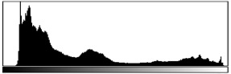
If I alter this image by stretching the histogram so much I truncate the data at both ends...
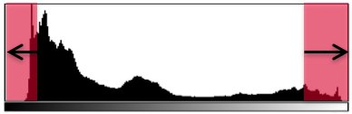
It may not be immediately obvious that we have lost information from the image - by eye it can be hard to tell.
Altered image, histogram truncated:
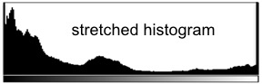
It's much easier if we use a lookup table (LUT) designed especially for this purpose. In Fiji, you'll find the "HiLo" lookup table under Image > Lookup Tables > HiLo.
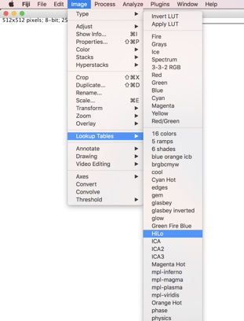
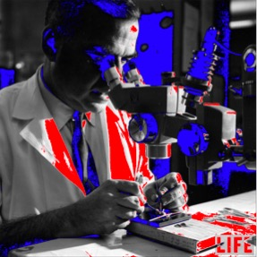
This is the result. With the new lookup table it's now easy to see areas of image saturation.
The red pixels show the locations of image saturation (truncation at the top end of the histogram), and the blue pixels show truncation at the lower end of the histogram. We have lost information about the relative brightness and contrast in these areas.
Adjust the display, not the underlying pixel values
Using “Enhance Contrast” with either the “Normalize” or “Equalize Histogram” boxes checked will alter your underliying data (change the pixel values). In most cases, this is NOT what you want to do.
If you do happen to have a really good reason why it’s appropriate for your situation, then you need to justify this decision and clearly describe it, in the captions and methods sections, and anywhere else relevant.
Good: adjusting only the display, not the pixel values
In Fiji, Image > Adjust > Brightness/Contrast... (keyboard shortcut: Control+Shift+C) allows you to change the display of an image, without altering the underlying pixel values of your data.
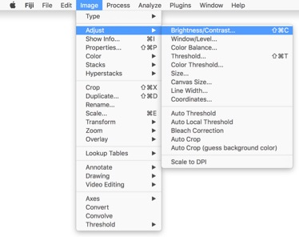 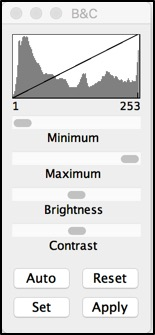
Bad: overwrites pixel values with different values
In Fiji, Process > Enhance Contrast does not simply adjust the display. Instead, if either of the two checkbox options are enabled ("Normalize" or "Equalize Histogram") then it will overwrite your underlying pixel values.
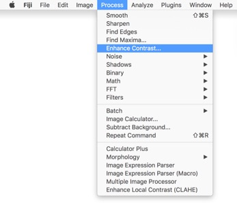 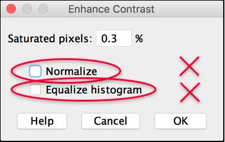
Enhance contrast: normalize keyword – histogram stretch, overwrites previous pixel values. (Linear transform)
Enhance contrast: equalize keyword – a NON-LINEAR transform of the histogram. (Attempts to create an image with equal numbers of pixels at every grey level)
Avoid non-linear transforms
Non-linear transforms are:
- Very difficult for humans to interpret
- Ok only in very limited circumstances
- You must clearly describe every step of your analysis and image processing
Examples of non-linear transforms:
Histogram Equalize
- Fiji Enhance Contrast - “equalize”. This overwrites the underlying pixel data, and it is exceptionally difficult to retrieve the original relationship between pixels after this operation has been applied.
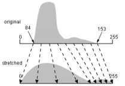
Gamma correction
- Imaris display tools
Adjusting gamma is fine for 3D rendering applications, but you need to be aware of this because it will also affect what you see in the 2D orthoslices. Clicking and dragging the middle dot in the Imaris menu (pictured below) is actually changing the gamma value. The graph shows what effect gamma values of above and below 1 will create.
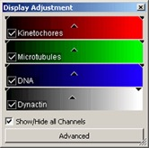 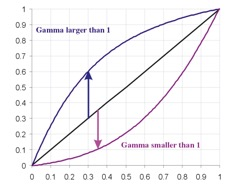